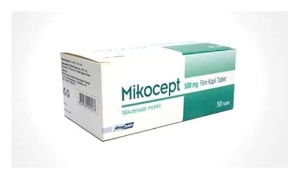

Mikocept 500 mg Film Kaplı Tablet, 50 Adet

Ne için kullanılır
KT · Bölüm 1* MİKOCEPT, 500 mg mikofenolat içeren film kaplı tabletler halindedir. * MİKOCEPT, vücutta bulunan ve inozin monofosfat dehidrogenaz (IMPDH) adı verilen bir enzimin çalışmasını engelleyerek etki eder, bağışıklık sistemini baskılar (immünosupresandır).
* MİKOCEPT 50 film kaplı tablet içeren ambalajlarda, 10'ar tablet içeren blisterler : halinde bulunmaktadır. Bir film kaplı tablet, 500 mg mikofenolat mofetil içerir. Tabletler ni lavanta-renkte, oblong ve bir yüzü çentiklidir. | * MİKOCEPT tablet, size nakledilmiş böbrek, karaciğer veya kalbin vücudunuz tarafından : reddini önlemek için kullanılır. MİKOCEPT siklosporin ve kortikosteroid adı verilen diğer ilaçlar ile beraber kullanılır.